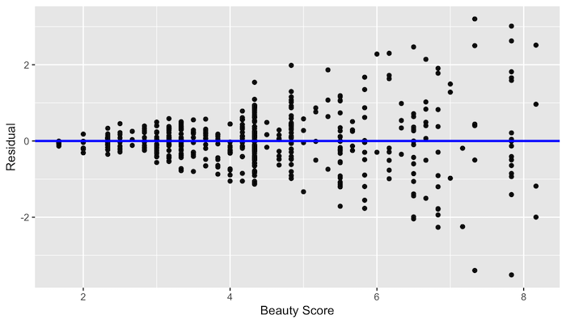
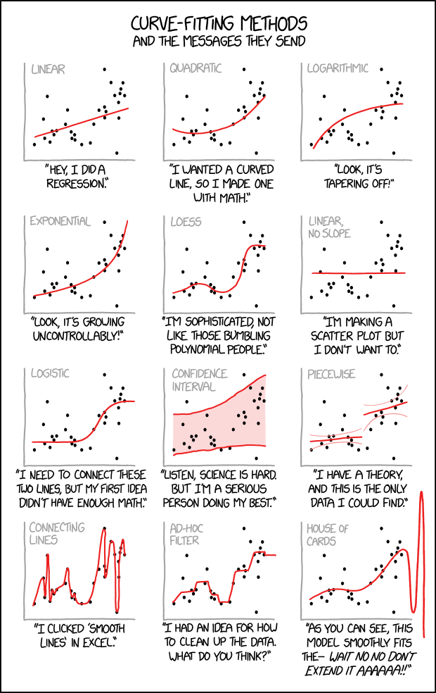

\(K\) Nearest Neighbors
Applied Machine Learning
Agenda
- Review of Homework 2
- A human understanding of regression
- Dinner break
- Preprocessing and BoxCox
- The KNN algorithm and the Confusion Matrix
Setup
Reporting Impact from Regressions
Correlation
http://guessthecorrelation.com/ …my high score is 72 (Jameson 122)

Calculating correlation
Exercise
- Calculate the correlation between log(price) and points
- by variety
- for Oregon Chardonnay, Pinot Noir and Pinot Gris
- in the same tibble
Solution
Visualizing these different correlations
Graphing residuals (bad)

Graphing residuals (good)

Interpreting the coefficients
Since we logged the DV, a 1 point ratings increase = 9.85% increase in price on average.
Note: \[ (e^x-1)*100 \]
Even moar awesomer with some code fu
for(v in c("Chardonnay", "Pinot Gris","Pinot Noir")){
m <- lm(lprice~points, filter(wine,province=="Oregon", variety==v))
pct <- round((exp(coef(m)["points"]) - 1) * 100,2)
print(str_c("For ",v,", a 1 point ratings increase leads to a ",pct,"% increase in price."))
}[1] "For Chardonnay, a 1 point ratings increase leads to a 11.34% increase in price."
[1] "For Pinot Gris, a 1 point ratings increase leads to a 5.46% increase in price."
[1] "For Pinot Noir, a 1 point ratings increase leads to a 10.27% increase in price."Logged feature
Call:
lm(formula = price ~ lpoints, data = filter(wine, province ==
"Oregon") %>% mutate(lpoints = log(points)))
Coefficients:
(Intercept) lpoints
-1419.0 324.4 Since we logged the IV (feature), a 1% ratings increase = 3.24 increase in price on average.
Note: \[ x/100 \]
LogLog (also elasticity)
Call:
lm(formula = lprice ~ lpoints, data = filter(wine, province ==
"Oregon") %>% mutate(lpoints = log(points)))
Coefficients:
(Intercept) lpoints
-33.770 8.298 …a 1% increase in ratings equals a 8.3% increase in price on average
Summary
- Only the dependent/response variable is log-transformed. Exponentiate the coefficient, subtract one from this number, and multiply by 100. This gives the percent increase (or decrease) in the response for every one-unit increase in the independent variable. Example: the coefficient is 0.198. (exp(0.198) – 1) * 100 = 21.9. For every one-unit increase in the independent variable, our dependent variable increases by about 22%.
- Only independent/predictor variable(s) is log-transformed. Divide the coefficient by 100. This tells us that a 1% increase in the independent variable increases (or decreases) the dependent variable by (coefficient/100) units. Example: the coefficient is 0.198. 0.198/100 = 0.00198. For every 1% increase in the independent variable, our dependent variable increases by about 0.002.
- Both dependent/response variable and independent/predictor variable(s) are log-transformed. Interpret the coefficient as the percent increase in the dependent variable for every 1% increase in the independent variable. Example: the coefficient is 0.198. For every 1% increase in the independent variable, our dependent variable increases by about 0.20%.
Graphing points by variety

Summary
(tmp <- wine %>%
filter(province=="Oregon") %>%
filter(variety %in% c("Chardonnay","Pinot Noir","Pinot Gris")) %>%
group_by(variety) %>%
summarise(mean=mean(points)))# A tibble: 3 × 2
variety mean
<chr> <dbl>
1 Chardonnay 89.7
2 Pinot Gris 88.5
3 Pinot Noir 89.5Note:
- The difference between Pinot Gris and Chardonnay is -1.2402471
- The difference between Pinot Noir and Chardonnay is -0.2555915
Regression
model <- lm(points~variety,
filter(wine,province=="Oregon",variety %in% c("Chardonnay","Pinot Noir","Pinot Gris")))
get_regression_table(model)# A tibble: 3 × 7
term estimate std_error statistic p_value lower_ci upper_ci
<chr> <dbl> <dbl> <dbl> <dbl> <dbl> <dbl>
1 intercept 89.7 0.122 737. 0 89.5 90.0
2 variety: Pinot Gris -1.24 0.177 -7.03 0 -1.59 -0.894
3 variety: Pinot Noir -0.256 0.132 -1.94 0.053 -0.515 0.003What is the equation for this regression?
Assumptions of linear regression
- Linearity of relationship between variables
- Independence of the residuals
- Normality of the residuals
- Equality of variance of the residuals
Linearity of relationship

What would the residuals look like?
Independence
Given our original model of \(log(price)=m*Points+b\)…
…are there any problems with independence?
Normality

Equality of variance
No equality in the variance
Dinner (and vitural high fives)
Preprocessing and BoxCox
Setup
Preprocessing
Box-Cox transformations use MLE to estimate \(\lambda\)
\(x^{*} = \frac{x^{\lambda}-1}{\lambda\: \tilde{x}^{\lambda-1}}\)
- when \(\lambda=1\), there is no transformation
- when \(\lambda=0\), it is log transformed
- when \(\lambda=0.5\), it is square root
- when \(\lambda=-1\), it is an inverse
Caret preprocessing is so easy!
wine %>%
preProcess(method = c("BoxCox","center","scale")) %>%
predict(wine) %>%
select(-description) %>%
head() province price points year taster_name
1 Oregon 0.7146905 -1.033841 -0.03425331 Paul Gregutt
2 Oregon -1.4139991 -1.033841 0.33313680 Paul Gregutt
3 California 0.8225454 -1.033841 -0.40146088 Virginie Boone
4 Oregon 0.2408520 -1.367723 -0.76848588 Paul Gregutt
5 Oregon -1.2418658 -1.367723 -1.13532834 Paul Gregutt
6 Oregon -1.0109945 -1.367723 1.06846470 Paul GreguttBut wait… what is wrong here?
wino <- wine %>%
mutate(year_f = as.factor(year))
wino <- wino %>%
preProcess(method = c("BoxCox","center","scale")) %>%
predict(wino)
head(wino %>% select(starts_with("year"))) year year_f
1 -0.03425331 2012
2 0.33313680 2013
3 -0.40146088 2011
4 -0.76848588 2010
5 -1.13532834 2009
6 1.06846470 2015The KNN Algorithm
Algorithm
- Load the data
- Initialize K to your chosen number of neighbors
- For each example in the data
- Calculate the distance between the query example and the current example from the data.
- Add the distance and the index of the example to an ordered collection
- Sort the ordered collection of distances and indices from smallest to largest (in ascending order) by the distances
- Pick the first K entries from the sorted collection
- Get the labels of the selected K entries
- If regression, return the mean of the K labels
- If classification, return the mode of the K labels
Let’s draw it
Engineering some features
wino <- wino %>%
mutate(taster_name = fct_lump(taster_name,5)) %>%
dummy_cols(
select_columns = c("year_f","taster_name"),
remove_most_frequent_dummy = T,
remove_selected_columns = T) %>%
rename_all(funs(tolower(.))) %>%
rename_all(funs(str_replace_all(., "-", "_"))) %>%
rename_all(funs(str_replace_all(., " ", "_"))) %>%
mutate(cherry = str_detect(description,"cherry")) %>%
mutate(chocolate = str_detect(description,"chocolate")) %>%
mutate(earth = str_detect(description,"earth")) %>%
select(-description)
head(wino) %>%
select(1:8) province price points year year_f_1996 year_f_1997
1 Oregon 0.7146905 -1.033841 -0.03425331 0 0
2 Oregon -1.4139991 -1.033841 0.33313680 0 0
3 California 0.8225454 -1.033841 -0.40146088 0 0
4 Oregon 0.2408520 -1.367723 -0.76848588 0 0
5 Oregon -1.2418658 -1.367723 -1.13532834 0 0
6 Oregon -1.0109945 -1.367723 1.06846470 0 0
year_f_1998 year_f_1999
1 0 0
2 0 0
3 0 0
4 0 0
5 0 0
6 0 0Simple model
Confusion matrix
Confusion Matrix and Statistics
Reference
Prediction Burgundy California Casablanca_Valley Marlborough New_York
Burgundy 235 0 0 0 0
California 0 773 0 0 0
Casablanca_Valley 0 0 8 6 3
Marlborough 0 0 8 19 11
New_York 0 0 3 12 11
Oregon 3 18 7 8 1
Reference
Prediction Oregon
Burgundy 2
California 0
Casablanca_Valley 1
Marlborough 2
New_York 1
Oregon 541
Overall Statistics
Accuracy : 0.9486
95% CI : (0.9369, 0.9587)
No Information Rate : 0.4728
P-Value [Acc > NIR] : < 2.2e-16
Kappa : 0.9206
Mcnemar's Test P-Value : NA
Statistics by Class:
Class: Burgundy Class: California Class: Casablanca_Valley
Sensitivity 0.9874 0.9772 0.307692
Specificity 0.9986 1.0000 0.993928
Pos Pred Value 0.9916 1.0000 0.444444
Neg Pred Value 0.9979 0.9800 0.989124
Prevalence 0.1423 0.4728 0.015541
Detection Rate 0.1405 0.4620 0.004782
Detection Prevalence 0.1417 0.4620 0.010759
Balanced Accuracy 0.9930 0.9886 0.650810
Class: Marlborough Class: New_York Class: Oregon
Sensitivity 0.42222 0.423077 0.9890
Specificity 0.98710 0.990285 0.9671
Pos Pred Value 0.47500 0.407407 0.9360
Neg Pred Value 0.98408 0.990887 0.9945
Prevalence 0.02690 0.015541 0.3270
Detection Rate 0.01136 0.006575 0.3234
Detection Prevalence 0.02391 0.016139 0.3455
Balanced Accuracy 0.70466 0.706681 0.9781Kappa statistic
Compares observed accuracy against what would be expected by a random classifier.
- < 0.2 (not so good)
- 0.21 - 0.4 (ok)
- 0.41 - 0.6 (pretty good)
- 0.6 - 0.8 (great)
- > 0.8 (almost perfect)
…whoa! What’s going on here?
Fixing the leak
wino <- select(wino, -starts_with("taster")) # get rid of the taster variables
set.seed(504)
wine_index <- createDataPartition(wino$province, p = 0.8, list = FALSE)
train <- wino[ wine_index, ]
test <- wino[-wine_index, ]
fit <- knn(
train = select(train,-province),
test = select(test,-province),
k=5,
cl = train$province,
prob = T)Confusion matrix
Confusion Matrix and Statistics
Reference
Prediction Burgundy California Casablanca_Valley Marlborough New_York
Burgundy 113 40 3 6 1
California 49 609 11 14 10
Casablanca_Valley 2 4 0 1 1
Marlborough 4 6 3 3 3
New_York 1 3 0 5 2
Oregon 69 129 9 16 9
Reference
Prediction Oregon
Burgundy 42
California 230
Casablanca_Valley 2
Marlborough 11
New_York 4
Oregon 258
Overall Statistics
Accuracy : 0.5888
95% CI : (0.5647, 0.6125)
No Information Rate : 0.4728
P-Value [Acc > NIR] : < 2.2e-16
Kappa : 0.3423
Mcnemar's Test P-Value : 9.85e-07
Statistics by Class:
Class: Burgundy Class: California Class: Casablanca_Valley
Sensitivity 0.47479 0.7699 0.000000
Specificity 0.93589 0.6440 0.993928
Pos Pred Value 0.55122 0.6598 0.000000
Neg Pred Value 0.91485 0.7573 0.984366
Prevalence 0.14226 0.4728 0.015541
Detection Rate 0.06754 0.3640 0.000000
Detection Prevalence 0.12253 0.5517 0.005977
Balanced Accuracy 0.70534 0.7070 0.496964
Class: Marlborough Class: New_York Class: Oregon
Sensitivity 0.066667 0.076923 0.4717
Specificity 0.983415 0.992107 0.7940
Pos Pred Value 0.100000 0.133333 0.5265
Neg Pred Value 0.974437 0.985525 0.7557
Prevalence 0.026898 0.015541 0.3270
Detection Rate 0.001793 0.001195 0.1542
Detection Prevalence 0.017932 0.008966 0.2929
Balanced Accuracy 0.525041 0.534515 0.6328Basic model with parameter tuning
control <- trainControl(method = "boot", number = 1)
fit <- train(province ~ .,
data = train,
method = "knn",
tuneLength = 15,
trControl = control)
fitk-Nearest Neighbors
6707 samples
25 predictor
6 classes: 'Burgundy', 'California', 'Casablanca_Valley', 'Marlborough', 'New_York', 'Oregon'
No pre-processing
Resampling: Bootstrapped (1 reps)
Summary of sample sizes: 6707
Resampling results across tuning parameters:
k Accuracy Kappa
5 0.5578427 0.3100153
7 0.5759572 0.3301487
9 0.5804858 0.3313401
11 0.5821326 0.3308700
13 0.5883079 0.3372149
15 0.5953067 0.3462655
17 0.5969535 0.3481324
19 0.5977769 0.3465072
21 0.5936599 0.3392167
23 0.5977769 0.3437787
25 0.5957184 0.3392827
27 0.6010704 0.3472493
29 0.5936599 0.3348038
31 0.5994236 0.3436267
33 0.5990119 0.3420449
Accuracy was used to select the optimal model using the largest value.
The final value used for the model was k = 27.Confusion Matrix
Confusion Matrix and Statistics
Reference
Prediction Burgundy California Casablanca_Valley Marlborough New_York
Burgundy 103 24 0 6 0
California 66 694 13 18 13
Casablanca_Valley 0 0 1 0 0
Marlborough 0 0 2 0 0
New_York 1 1 0 1 2
Oregon 68 72 10 20 11
Reference
Prediction Oregon
Burgundy 37
California 281
Casablanca_Valley 0
Marlborough 0
New_York 2
Oregon 227
Overall Statistics
Accuracy : 0.6139
95% CI : (0.5901, 0.6373)
No Information Rate : 0.4728
P-Value [Acc > NIR] : < 2.2e-16
Kappa : 0.3554
Mcnemar's Test P-Value : NA
Statistics by Class:
Class: Burgundy Class: California Class: Casablanca_Valley
Sensitivity 0.43277 0.8774 0.0384615
Specificity 0.95331 0.5567 1.0000000
Pos Pred Value 0.60588 0.6396 1.0000000
Neg Pred Value 0.91018 0.8350 0.9850478
Prevalence 0.14226 0.4728 0.0155409
Detection Rate 0.06157 0.4148 0.0005977
Detection Prevalence 0.10161 0.6485 0.0005977
Balanced Accuracy 0.69304 0.7170 0.5192308
Class: Marlborough Class: New_York Class: Oregon
Sensitivity 0.000000 0.076923 0.4150
Specificity 0.998771 0.996964 0.8393
Pos Pred Value 0.000000 0.285714 0.5564
Neg Pred Value 0.973070 0.985594 0.7470
Prevalence 0.026898 0.015541 0.3270
Detection Rate 0.000000 0.001195 0.1357
Detection Prevalence 0.001195 0.004184 0.2439
Balanced Accuracy 0.499386 0.536944 0.6271With parameter tuning and subsampling
fit <- train(province ~ .,
data = train,
method = "knn",
tuneLength = 15,
metric = "Kappa",
trControl = control)
fitk-Nearest Neighbors
6707 samples
25 predictor
6 classes: 'Burgundy', 'California', 'Casablanca_Valley', 'Marlborough', 'New_York', 'Oregon'
No pre-processing
Resampling: Bootstrapped (1 reps)
Summary of sample sizes: 6707
Resampling results across tuning parameters:
k Accuracy Kappa
5 0.5704341 0.3273476
7 0.5851761 0.3470054
9 0.5876331 0.3463441
11 0.5859951 0.3415135
13 0.5999181 0.3595324
15 0.6036036 0.3622092
17 0.6109746 0.3711568
19 0.6003276 0.3514989
21 0.6093366 0.3623349
23 0.6085176 0.3606025
25 0.6056511 0.3544650
27 0.6138411 0.3641099
29 0.6117936 0.3595468
31 0.6122031 0.3594652
33 0.6122031 0.3581913
Kappa was used to select the optimal model using the largest value.
The final value used for the model was k = 17.Tuning plot
Group modeling problem I
- Practice running different versions of the model
- Create some new features and
- see if you can achieve a Kappa >= 0.5
Bonus: KNN for regression
k-Nearest Neighbors
6707 samples
25 predictor
No pre-processing
Resampling: Bootstrapped (1 reps)
Summary of sample sizes: 6707
Resampling results across tuning parameters:
k RMSE Rsquared MAE
5 0.7397803 0.4667813 0.5679558
7 0.7361223 0.4690235 0.5685617
9 0.7332577 0.4715985 0.5679969
11 0.7312190 0.4740079 0.5655931
13 0.7286175 0.4774743 0.5629271
15 0.7255261 0.4822795 0.5606873
17 0.7256343 0.4824432 0.5609475
19 0.7269683 0.4815387 0.5616769
21 0.7295000 0.4784287 0.5622216
23 0.7278374 0.4819006 0.5611112
25 0.7297833 0.4792947 0.5626595
27 0.7301862 0.4804616 0.5632017
29 0.7303998 0.4804668 0.5629553
31 0.7300819 0.4814206 0.5628775
33 0.7290362 0.4827843 0.5618911
RMSE was used to select the optimal model using the smallest value.
The final value used for the model was k = 15.